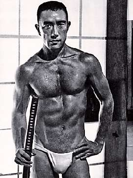

Борис Акунин
Мой календарь
Кажется, это единственное, в чем русские схожи с японцами: у тех и у других большие проблемы с чувством меры, с тем, что на английском называется enough is enough (вольный перевод «хорош уже, завязывай»). Классический тип русского и японского поведения - не остановиться вовремя, заплыть за буйки и нахлебаться, а то и потопнуть. С другой стороны, у наций, обделенных чувством меры, повышенный процент гениев, они ведь тоже из «заплывающих за буйки».
14 января 1925 года на свет явился главный японский писатель Юкио Мисима, человек, которому всегда всего было мало.
Мало прославиться в 24 года. Мало стать самым переводимым японским литератором. Мало превратить свое хилое от природы тело в образчик бодибилдинга (фотографию поместили даже в энциклопедическую статью о культуризме). Мало быть одним из самых знаменитых писателей. Мало слов.
Этим - усталостью от Слова и жаждой Действия - вероятно, объясняется совершенно идиотская попытка государственного переворота, который Мисима (вооружившись самурайским мечом!) попытался устроить в 1970 году, а когда не получилось, взрезал себе живот. Брюшная полость у японцев считается вместилищем души.
Когда-то я Мисиму очень жалел. Такой талантливый, сколько мог бы еще написать. Но теперь даже не знаю. Жил-был человек, который хотел красиво жить и красиво умереть. Как задумал, так и поступил. Конечно, на мой взгляд харакири Эмиля Золя красивее, но представления о красоте у всех разные.
А насчет того, хорошо это или плохо - иметь чувство меры и вовремя останавливаться, каждый решает для себя.
Сегодня правильный день, чтобы об этом задуматься.